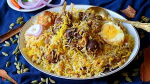

Biriyani

Biriyani, a spicy chicken and rice dish, is one of the most well-known Indian-Pakistani dishes.
Ingredients:
- 1 cup basmati rice
- 1 cup chicken breast or thighs
- 1 onion, chopped
- 2 cloves garlic, minced
- 1 teaspoon cumin seeds
- 1 teaspoon coriander powder
- 1 teaspoon garam masala powder
- 1 teaspoon salt
- 1/2 teaspoon black pepper
- 2 tablespoons vegetable oil
- 2 tablespoons lemon juice
- 2 tablespoons chopped fresh cilantro
Steps:
- Heat oil in a large pan over medium heat.
- Add cumin seeds and let them sizzle for a few seconds.
- Add onion and garlic and sauté until the onion is translucent.
- Add chicken and cook until it is browned and cooked through.
- Add rice, coriander powder, garam masala powder, salt, and other spices
- Add lemon juice and mix well.
- Transfer the mixture to a serving dish and garnish with cilantro.
Home Page